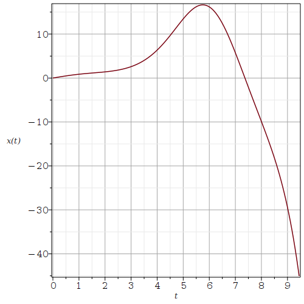
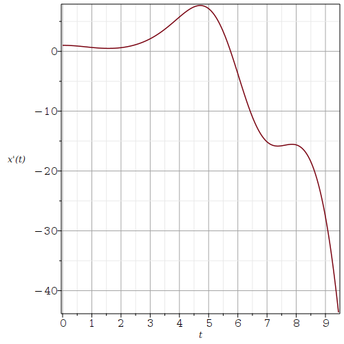
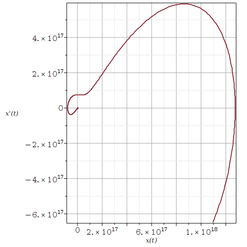

EDO d'ordre deux avec coefficients variables
Exemple: Considérons l'EDO d'ordre deux avec des coefficients variables
\[ \frac{\text{d}^2 x}{\text{d} t^2} + \cos(t)\, x = 0 \ . \]Elle est définie dans Maple de la façon suivante.
> ODE:=diff(x(t),t$2) + cos(t)*x(t)=0;\[ ODE := \frac{\partial^{2}}{\partial t^{2}}\, x(t) + \cos(t)\,x(t)=0 \]
Nous procédons de la façon suivante pour résoudre cette EDO avec les conditions initiales \(x(0)=0\) et \(x'(0)=1\).
> ODEic:= { ODE } union {x(0)=0,D(x)(0)=1};
\[
ODEic := \left\{ \frac{\partial^{2}}{\partial t^{2}}\,
x(t) + \cos(t)\,x(t)=0, \,x(0)=0, \,\text{D}(x)(0)=1 \right\}
\]
> dsolve(ODEic,x(t));\[ x(t) =2\, MathieuS\left(0,-2,\frac{t}{2} \right) \]
La réponse donnée par Maple est en termes de la fonction de Mathieu MathieuS(a, q, s). C'est une solution en série de puissances de l'EDO de Mathieu
\[ \frac{\text{d}^2 x}{\text{d} t^2} + (a - 2 q \cos(2 s)) u = 0 \, . \]Assumons que nous ne voulons pas passer beaucoup de temps à étudier cette fonction spéciale. Alors, nous pouvons simplement demander à Maple de nous fournir une solution en série de puissances de l'EDO ci-dessus avec les conditions initiales \(x(0)=0\) et \(x'(0)=1\).
> Order:=14; dsolve(ODEic,x(t),type='series');\[ \begin{split} & Order := 14 \\ & x(t) = t-1/6\,t^{3}+1/30\,t^{5}- \frac{19}{5040}\,t^{7}+ \frac{29}{72576}\,t^{9} -\frac {713}{19958400}\,t^{11} +\frac{3539}{1245404160}\,t^{13} +O\left(t^{14}\right) \end{split} \]
La commande Order :=14 fixe l'ordre de la série de puissances que Maple va fournir. Par défaut, Order est égale à \(6\). Pour obtenir de l'information sur la méthode d'intégration utilisée par Maple, nous pouvons utiliser la commande infolevel[dsolve]:=3 avant d'utiliser la fonction dsolve(). Le niveau normal est 1. Il peut aller jusqu'à 5.
Puisque la solution en terme de la fonction de Mathieu ou la solution en série de puissances ne sont pas des expressions simples, nous pouvons aussi bien résoudre numériquement l'EDO ci-dessus avec les conditions initiales \(x(0)=0\) et \(x'(0)=1\).
> xs:=dsolve(ODEic, x(t),type=numeric, output=procedurelist, method=rkf45, range=0..30*Pi);\[ xs := \text{proc}\left(x\_rkf45\right)...\text{end proc} \]
Si nous évaluons cette fonction à un point \(t=a\), nous obtenons alors la liste \(a, x(a) , x'(a) \) comme nous pouvons voir ci-dessous.
> xs(2.5);\[ \left[ t=2.5, \,x(t)=1.811145669678303, \,{\frac{\text{d}}{\text{d} t}}\, x(t)=1.107676186986299\right] \]
Nous pouvons utiliser xs pour tracer les graphes de \(x\) et \(x'\) en fonction de \(t\).
> with(plots): > odeplot(xs,[t,x(t)],0..3*Pi,axes=BOXED,labels=[`t`,`x(t)`],refine=2, gridlines=true);

> odeplot(xs,[t,diff(x(t),t)],0..3*Pi,axes=BOXED,labels=[`t`,`x'(t)`],refine=2, gridlines=true);

Nous pouvons aussi tracer une partie de l'orbite \(\{ (x(t), x'(t)) : t \in \mathbb{R} \}\).
> odeplot(xs,[x(t),diff(x(t),t)],0..3*Pi,axes=BOXED,labels=[`x(t)`,`x'(t)`],refine=2, gridlines=true);

Juste en regardant les figures ci-dessus, pouvez-vous prédire le comportement de \(x(t)\) et \(x'(t)\) lorsque \(t\) converges vers \(\infty\)? Variez la longueur de l'intervalle d'intégration et observez ce qui arrive aux graphes de \(x\) et \(x'\).
Pour le reste de ce document, nous considérons deux EDO d'ordre deux avec des coefficients variables qui sont des examples classiques: l'équation de Cauchy-Euler et l'équation de Bessel. Il y en a bien d'autres mais ces deux EDO sont très importantes.
Équation de Cauchy-Euler
L'équation de Cauchy-Euler est
\[ x^2 y''(x) + b x y'(x) + c y(x)=0 \]où \(b\) et \(c\) sont des constantes. Cette EDO est définie dans Maple de la façon suivante.
> eq1 := x^2*diff(y(x),x$2) + b*x*diff(y(x),x)+c*y(x)=0;\[ eq1 := x^2 \left( \frac{\text{d}^2}{\text{d} x^2} y(x) \right) + b x \left( \frac{\text{d}}{\text{d} x} y(x)\right) + c y(x) = 0 \]
La forme des solutions de cette EDO dépend des valeurs des paramètres \(b\) et \(c\). L'idée principale pour trouver les solutions de cette EDO est de supposer qu'une solution de cette EDO est de la forme \(\displaystyle y(x) = x^r\). Si nous substituons cette expression dans l'EDO, nous obtenons l'équation suivante.
> eq2 := eval( subs(y(x)=x^r, eq1) );\[ eq2 := x^2 \left( \frac{x^r r^2}{x^2} - \frac{x^r r}{x^2} \right) + b x^r r + c x^r = 0 \]
Après avoir divisé par \(x^r\) des deux côtés de l'égalité, nous obtenons l'équation suivante.
> simplify( eq2/x^r );\[ r^2+ (b-1) r+c = 0 \]
L'équation indicielle de l'équation de Cauchy-Euler est \(\displaystyle r^2+(b-1)r+c=0\). Les solutions de l'équation de Cauchy-Euler dépendent des racines de l'équation indicielle.
Note: L'équation de Cauchy-Euler peut être réduite à l'EDO linéaire d'ordre deux avec des coefficients constants \(\tilde{y}''(t) +(b-1) \tilde{y}'(t) +c \tilde{y}(t) = 0\) grâce à la substitution \(\displaystyle x = e^t\). Si \(t\mapsto \tilde{y}(t)\) est une solution de cette EDO, alors \(x \mapsto y(x) = \tilde{y}(\ln(x))\) est une solution de l'équation de Cauchy-Euler. L'équation indicielle de l'équation de Cauchy-Euler est l'équation caractéristique de l'EDO linéaire d'ordre deux avec des coefficients constants. Il en découle qu'il y a trois types de solutions pour l'équation de Cauchy-Euler comme c'est le cas pour l'EDO linéaire d'ordre deux avec des coefficients constants.
- \(\displaystyle y(x) = c_1 x^{r_1} + c_2 x^{r_2}\) si l'équation indicielle possède deux racines réelles distinctes, \(r_1\) et \(r_2\).
- \(\displaystyle y(x) = c_1 x^r + c_2 x^r \ln(x)\) si l'équation indicielle possède une seule racine réelle, \(r\).
- \(\displaystyle y(x) = c_1 x^a \cos(b\ln(x)) + c_2 x^a \sin(b\ln(x))\) si l'équation indicielle possède une paire de racines complexes conjuguées, \(a \pm b i\) avec \(b \neq 0\).
Exemple: Supposons que b=c=1 dans l'équation de Cauchy-Euler.
> eq3 := subs({b=1,c=1},eq1);
\[
eq3 := x^2 \left( \frac{\text{d}^2}{\text{d} x^2} y(x) \right)
+ x \left( \frac{\text{d}}{\text{d} x} y(x)\right) + y(x) = 0
\]
L'équation indicielle est \(r^2 + 1 = 0\) et elle possède une paire de racines complexes conjuguées; c'est-à-dire, \(\pm i\). Maple donne la solution générale suivante pour cette EDO.
> dsolve(eq3 ,y(x));\[ y(x) = \_C1 \sin(ln(x)) + \_C2 \cos(ln(x)) \]
C'est la solution générale à laquelle nous nous attendions.
Problèmes aux valeurs limites pour les EDO
Pour l'étude des équations aux dérivées partielles (EDP), il est très important d'étudier le problème de valeurs aux limites pour l'équation de Cauchy-Euler.
Exemple: Considérons l'équation de Cauchy-Euler avec b=c=1 et les conditions aux limites \(y(1)=1\) et \(y(3)=2\). En théorie, nous devons trouver des valeurs pour les constantes \(c_1\) et \(c_2\) dans la solution générale de l'équation de Cauchy-Euler telles que les conditions aux limites sont satisfaites. La fonction dsolve( ) peut faire cela pour nous.
> dsolve({ eq3,y(1)=1,y(3)=2},y(x));
\[
y(x) = -\frac{(-2+\cos(\ln(3))) \sin(ln(x))}{\sin(\ln(3))} + \cos(\ln(x))
\]
Exemple: Supposons que \(-b=c=1\) dans l'équation de Cauchy-Euler.
> eq4 := subs({b=-1,c=1},eq1);
\[
eq4 := x^2 \left( \frac{\text{d}^2}{\text{d} x^2} y(x) \right)
- x \left( \frac{\text{d}}{\text{d} x} y(x)\right) + y(x) = 0
\]
L'équation indicielle est \((r-1)^2 = 0\). Il n'y a qu'une seule racine réelle. Cette racine est \(r = 1\). Comme nous nous y attendons, la solution générale est la suivante.
> dsolve(eq4 ,y(x));\[ y(x) = \_C1 x+ \_C2 x \ln(x) \]
Si nous résolvons l'équation de Cauchy-Euler avec les mêmes conditions aux limites que précédemment, nous obtenons la solution suivante.
> dsolve({eq4,y(1)=1,y(3)=2},y(x));
\[
y(x) = x - \frac{x \ln(x)}{3 \ln(3)}
\]
Ainsi, nous avons que \(c_1 = 1\) et \(\displaystyle c_2 = -(3\ln(3)^{-1}\).
Équation de Bessel
Nous considérons l'équation de Bessel
\[ x^2 y''(x) + x y'(x) + (x^2-p^2) y(x)=0 \]où \(p\) est une constante. Cette EDO est définie dans Maple de la façon suivante.
> eq5 := x^2*diff(y(x),x$2)+x*diff(y(x),x) + (x^2-p^2)*y(x)=0;\[ eq5 := x^2 \left( \frac{\text{d}^2}{\text{d} x^2} y(x) \right) + x \left( \frac{\text{d}}{\text{d}x} \right) y(x) + (-p^2 + x^2) y(x) = 0 \]
L'équation indicielle pour l'équation de Bessel est \(r^2-p^2 =0\). Nous ne présenterons pas la théorie qui conduit à cette équation indicielle mais nous allons seulement mentionner que les solutions en séries de puissances sont requises pour déduire cette équation indicielle. L'équation indicielle a deux racines réelles distinctes quand \(p \neq 0\). La solution générale est donnée ci-dessous.
> dsolve(eq5,y(x));\[ y(x) = \_C1 BesselJ(p,x) + \_C2 BesselY(p,x) \]
BesselJ(p,x) est la fonction de Bessel de première espèce d'ordre \(p\) et BesselY(p,x) est la fonction de Bessel de deuxième espèce d'ordre \(p\). Les fonctions de Bessel de première espèce peut être exprimées en série de puissance à l'origine. Ce n'est pas le cas pour les fonctions de Bessel de deuxième espèce. L'origine est une singularité pour les fonctions de Bessel de deuxième espèce.
Nous pouvons utiliser Maple pour obtenir les premiers termes de la série de puissance de la fonction de Bessel de première espèce d'ordre \(0\) à l'origine.
> taylor(BesselJ(0,x),x=0,8);\[ 1 - \frac{1}{4} x^2 + \frac{1}{64} x^4 - \frac{1}{2304} x^6 + O(x^8) \]
Les graphes des fonctions de Bessel de première espèce d'ordre \(0\) et \(1\) sont tracés ci-dessous.
> with(plots):
> J0 := plot(BesselJ(0,x),x=0..10, color="red"):
> J1 := plot(BesselJ(1,x),x=0..10, color="blue"):
> display({J0,J1});

Sauf pour la fonction de Bessel de première espèce d'ordre \(0\) qui prend la valeur \(1\) à l'origine, toutes les fonctions de Bessel de première espèce sont nuls à l'origine.
Les graphes des fonctions de Bessel de deuxième espèce d'ordre \(0\) et \(1\) sont tracés ci-dessous.
> Y0 := plot(BesselY(0,x),x=0.1..10, color="red"):
> Y1 := plot(BesselY(1,x),x=0.1..10, color="blue"):
> display({Y0,Y1});